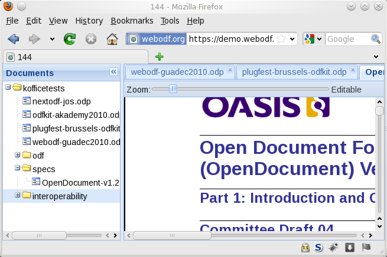

WebODF
About
WebODF is a JavaScript library that makes it easy to add Open Document Format (ODF) support to your website and to your mobile or desktop application. It uses HTML and CSS to display ODF documents.
WebODF is a Free Software project. All code is available under the AGPL. This means that you can use the code free of charge, investigate how it works, and share it with others.
News
2010-10-29
NLnet sponsors WebODF
The WebODF project has received funding from NLnet. The funding will be used to let Jos van den Oever work on WebODF for three months.
Getting involved
The WebODF source code is hosted at Gitorious. You can obtain a copy of the development version of the source code with GIT.
Demo
There is a demo website for WebODF. It has a large set of test documents available. You can explore the website to see how well WebODF can render the various ODF documents.
